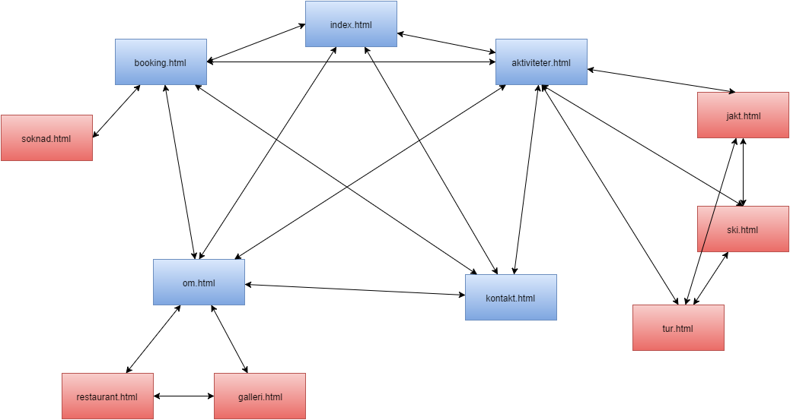
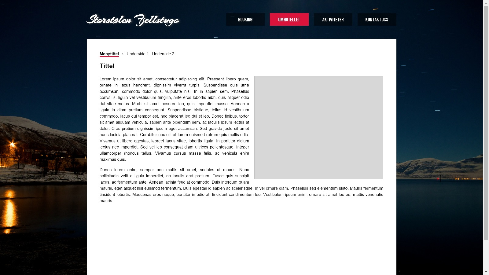
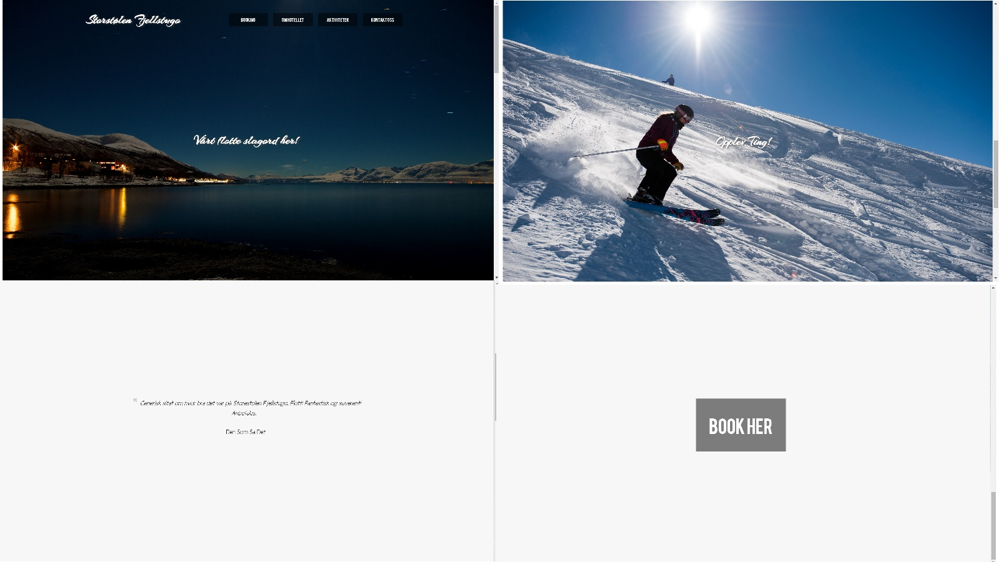
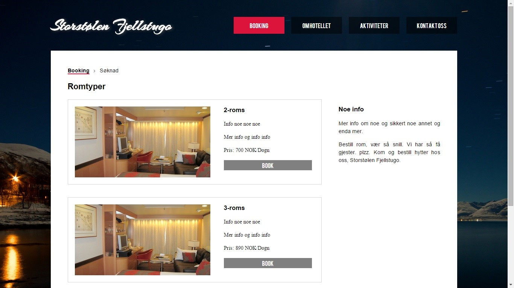
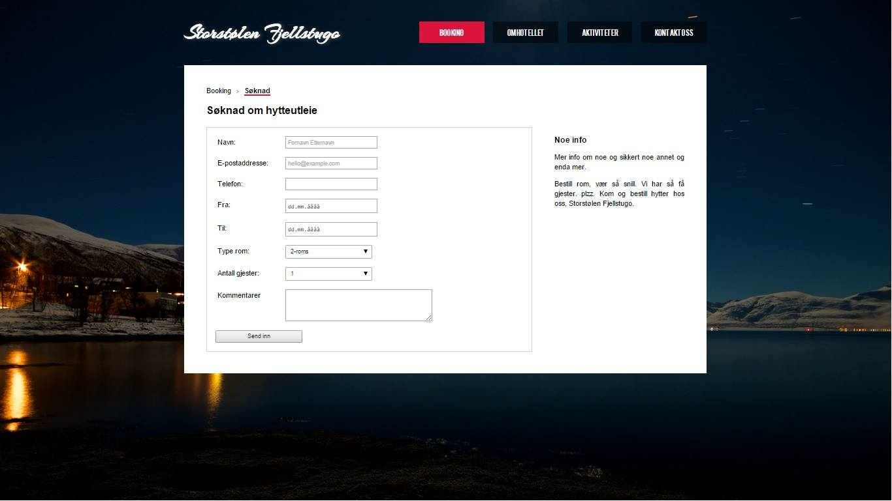
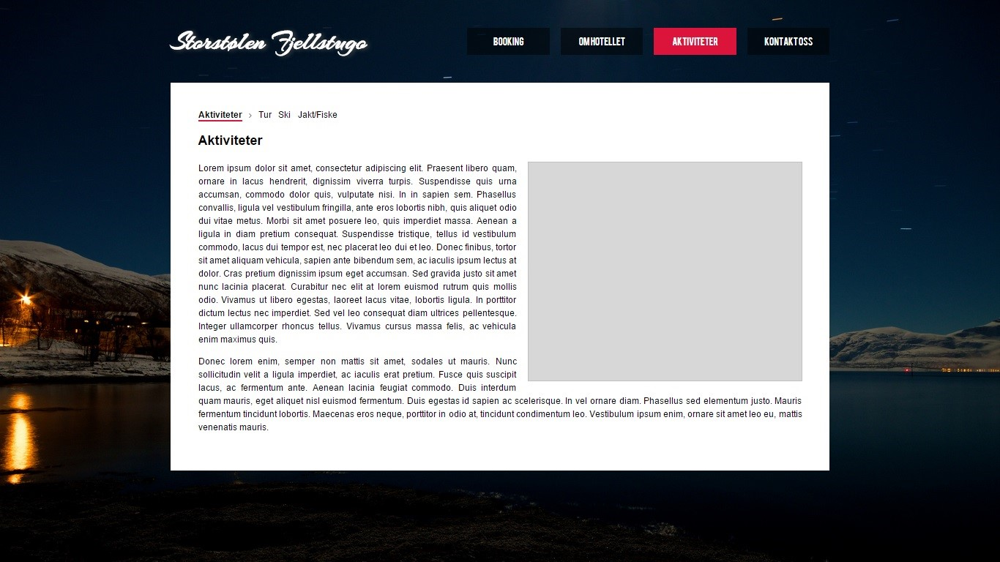
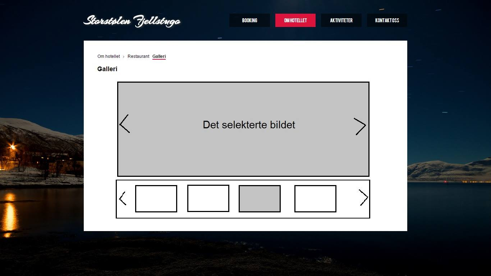
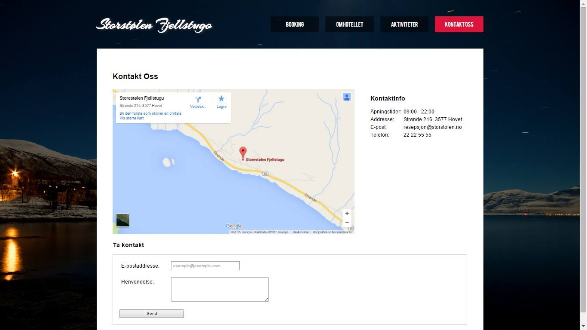

P2 Design
Gruppemedlemmer: Imad Abhari, Uy Tuan Huynh, Resotharan Kanagaratnam, Trygve Valle Karlsurd
Dato: 13. oktober 2015
Klienten
Klienten vår er Storestølen Fjellstugu, et imaginært hotell. Vi "kontaktet" den daglige lederen hos det imaginære hotellet for å se om de ville at vi skulle lage en nettside for dem.
Mål
Denne nettsiden skal ha som fremste mål å nå flere folk, og vise dem hva et opphold hos oss kan være. Informasjon om attraksjoner, jakt og fiske muligheter samt priser på leie av hytter og rom skal kunne være lett tilgjengelig. En nettside vil også kunne åpne opp for et internasjonalt marked for klienten. Ettersom mange turister kommer til Norge for å oppleve norsk natur og kultur.
Navigasjonsstruktur
I denne seksjonen skal vi ta for oss navigasjon av siden og begrunne avgjørelsene vi har tatt.
Nettsiden vår har en blanding av hierarkisk og lineær struktur. Hovedmåten man navigerer seg frem på er navigasjonsbaren oppe til høyre. Den lenker videre til booking, om hotellet, aktiviteter og kontakt oss. Man finner også en breadcrumb som tar deg videre til undersidene til "Booking", "Om Hotellet" og "Aktiviteter".
På forsiden finnes det to lenker som kommer når man scroller nedover. Disse er plassert med hensyn til at forsiden er bygget for å scrolles gjennom for å gi brukeren et overblikk av nettsiden. Forsiden består av fire sider som scrolles gjennom med hvert sitt tema. Den ene lenken lenker oss til aktivitet-siden da den viser visuelt forskjellige aktiviteter. Den andre lenken er på bunnen av forsiden og lenker til booking-siden.
På booking-siden blir man videreført til en søknadsskjema-side for hytte-/romutleie. Lenkene er plassert ved siden av de ulike rom- og hytteutleietypene. Her blir det brukt lineær struktur da det ikke gir noen mening å komme hit fra noen annen side.
På aktiviteter og om oss er det lokale hierarkiske strukturer. I aktiviteter skal man kunne navigere seg til ski-siden, tur-siden og fiske/jakt-siden. I om oss-siden skal man kunne navigere seg til galleri-siden og restaurant-siden. De er der fordi det er underliggende temaer på sidene og det er da fornuftig å kunne navigere seg fram til andre lignende sider. F.eks. er det fornuftig å kunne komme seg fra tur-siden til ski-siden, men ikke fra ski-siden til restaurant-siden.
Flytdiagrammet under viser til alle navigasjonsmulighetene. De rød boksene har samme navigasjonsmuligheter som den blå boksen den er lenket til og alle de blå boksene kan kommes til fra en anne blå boks. Man kan altså ikke komme fra en blå boks til en rød boks med mindre den er koblet direkte mot den.

Sitemap av siden
- index.html
- book.html
-
- om.html
-
- restaurant.html
- galleri.html
- aktiviteter.html
-
- ski.html
- tur.html
- jakt.html
- kontakt.html
Layout og utseende

I denne seksjonen diskuterer vi sideutformingen og utseende som er universalt for siden. Først diskuterer vi fontene, så farger, navbaren. banneren og bakgrunnsbildene.
Body
Bredden til hovedinnholdet på siden er på 1200px.
Font
For brødtekst/paragrafer (<p>) og overskriftene <h2> og <h3> har har vi valgt noen sans-serif-fonter; Helvetica Neue, Helvetica, Arial, sans-serif (der den første er foretrukket og de etterfølgende er fonter man faller på dersom fonten ikke er tilgjengelig). Størrelsen på brødteksten er 16px. Størrelsen på overskriftene <h2> og <h3> er 24px og 20px respektivt. Skriften i hovedmenyen er i fonten Bebas og har skriftstørrelse 16px. Logoen er i fonten arizonia og har skriftstørrelse 1.5em.
Farger
Fargene vi bruker på siden er hovedsakelig crimson (#990000), grå (#f7f7f7), svart (#000000), hvit (#ffffff) og lysgrå (#d4d4d4). Det brukes dessuten gjennomsiktighet på 50% med svart som grunnfarge. Crimsonrød brukes som en temafarge for siden og står også godt til gråtonene som er brukt.
Brødtekst, breadcrumbs og overskrifter er i svart. Teksten i hovedmenyen er hvit. Menyelementene i menyen er gjennomsiktig om den ikke er uthevet, mens den er i crimsonrød dersom den er uthevet. Dersom en lenke i breadcrumbsen er uthevet er den understreket med en border på 3px i crimsonrød. Logoen er hvit og har en grå text-shadow. Kanter der de er brukt er lysgrå for å ikke ta for mye oppmerksomhet.
Navbar
Vi har to navigasjonsbarer på siden, en i form av en horisontal meny og en i form av en breadcrumb. Den horisontale menyen fungerer som hovedmeny og er plassert oppe til høyre. Den har gjennomsiktige bokselementer (crimsonrød om uthevet), har hvit tekst, og har mellomrom mellom hvert element. Dersom man har musen over elementet blir boksen crimsonrød. Breadcrumben er plassert rett over overskriften til en side. Når et element er uthevet (hover eller selektert side) så er den understreket med en crimsonrød linje.
Lenkene i hovedmenyen lenker til de respektive sidene. Under disse sidene navigerer man seg med breadcrumbsen for å komme seg til undersidene.
Logo
Logoen er plassert til venstre på toppen. Den lenker til index-siden.
Bakgrunn
Bakgrunnen skiftes om det er dag eller natt og er bilder med enten natt- eller dagstema av området ved Storstølen Fjellstugu. Bakgrunnen til selvet innholdet er hvitt.
Begrunnelser
Vi ønsker å gi brukeren et enkelt og stramt design for enkel navigasjon av siden. Vi har derfor valgt at innholdet skal være i en hvit ramme og at menyen og logoen skal være over denne hvite rammen for å separere hovednavigasjon og innhold. Menyen er restriktert til fire kategorier som ikke overlapper innhold for klar navigasjon. Om brukeren ønsker å finne mer info går man til "Om Hotellet", mer om booking så går man til "Booking", osv.
Logoen er i hvit og gir et friskt utseende. Den har også skygge for å gi kontrast til bakgrunnen.
Brødteksten er svart fordi det gir en god kontrast på hvitt. Dette gjør teksten tydelig for brukeren. Det blir også brukt for breadcrumbs av samme grunn. Teksten på alle knappene er hvit. Grunnen til dette er at den står godt til den gjennomsiktige «fargen» som brukes på knappene.
Skriften i breadcrumbsen er understreket med crimsonfargen om den er uthevet da fargen står i god kontrast til både svart og hvitt, og gir samtidig et fargetema.
Vi har valgt noen serifløse fonter for brødteksten fordi det er lettere å lese på skjermer.
Innhold
Forsiden vil være førsteinntrykket når du kommer inn på en nettside. Når man først ankommer siden så blir man kun møtt av en velkomsthilsen/slagord, logoen, en navigasjonsbar og et bakgrunnsbilde.
Forsiden inneholder svært lite innhold for å oppfordre brukeren til å scrolle nedover siden for å oppdage mer og for å ikke overvelme brukeren av informasjon. Nedover siden vil man bli presentert for ulike anmeldelser av hotellet, noen bilder som viser ulike aktiviteter og til slutt en booking-knapp. Anmeldelsene er for å gi brukeren en kvalitetsikring av hotellet og en trygghetsfølelse. De ulike aktivitetene skal vise til hva man kan oppleve ved en overnatting og appellerer mest til det estetiske. Bildene skal oppmuntre brukeren til å ville ta del i de aktivitetene som blir fremvist.
Det skal gå an å gå videre fra aktivitetsseksjonen til en side som tar for seg aktiviteter ved hotellet, og videre fra bookingknappen til bookingsmuligheter. Anmeldelsene og aktivitetsbildene blir byttet ut i faste intervaller ved hjelp av javascript. Booking-knappen er plassert på bunnen fordi brukeren har scrollet seg nedover hele siden, fått et overblikk av nettsiden og er klar for å bestille rom/hytte. Hver seksjon på forsiden skal dekke hele skjermen. Ved hjelp av css har vi laget en parallax-effekt for å gi en mer sømløs erfaring av forsiden.

Booking vil vi ha informasjon om de ulike rommene og hyttene vi tilbyr. Har har vi venstrestilt informasjon om rommene til venstre og ekstraopplysninger til høyre. Da man leser fra venstre til høyre har vi plassert det viktigste, rominformasjon, til venstre. Informasjon om hver romtype er omkranset en kantlinje for å gjøre det enklere for brukeren å skille mellom de ulike romtypene. Innenfor kantlinjene så finner vi et bilde av romtypen til venstre og opplysninger om størrelse og pris til høyre. Det er også en knapp under opplysningene om rommet som fører til et skjema for å booke rommet. Bookingsiden opplyser brukeren om priser og gir dem et inntrykk om hvordan rommene ser ut og informasjon om prisklassen på hotellet.
Søknadssiden spør etter essensiell informasjon for en forespørsel om hytte-/romutleie. Dette er da "Navn", "e-post", "telefon", "fra-dato", "til-dato", "romtype", "antall gjester" og "kommentarer". Man kan ikke sende inn skjema dersom man ikke har fylt alle de viktige inputtene.


De neste sidene vil følge samme mal. Tekst med innhold og et bilde til høyre. Litt lenger nede finner vi en mal for disse sidene.
Om Hotellet vil være en side med litt historie rundt og om hotellets bakgrunn. Til høyre vil det være et bilde som viser hotellet. Her vil du finne "Restaurant" og "Galleri" i breadcrumben, samt også på "Restaurant" og "Galleri".
Restaurant vil inneholde en meny av mattilbudene på hotellet, samt åpningstider. Til høyre vil det være et bilde som viser restauranten. Restaurantsidens mål er å opplyse brukerne om mattilbudet ved hottelet. Dette er nyttig om noen gjester har matallergier, eller enkelte preferanser og er bevisste over prisklassen og åpningstider.
Aktiviteter brifer kort om de ulike aktivitene som man kan gjøre ved hotellet. Til høyre vil det være et bilde som viser en aktivitet som man kan gjøre ved hotellet. Her vil du finne aktiviteter - ski – tur – jakt og fiske i breadcrumben samt også på undersidene. Aktivitetsidens mål er å informere om aktivitetene man kan gjøre ved hotellet for å sørge for at gjestene og eventuelle bookere er klare over hva de kan gjøre ved hotellet, når eller hvor.
På Ski vil du finne informasjon om det lokale skitrekket samt turistløyper i nærheten. Til høyre vil det være et bilde av noen som står på ski.
På Tur vil du finne informasjon om de ulike arrangerte turene av regi av Storestølen Fjellstugu. Til høyre vil det være et bilde av noen som står på ski.
Jakt og fiske vil være en side med informasjon om hvordan jakt fungerer i høyfjellet, og priser samt informasjon på de arrangerte jaktlagene. Til høyre vil det være et bilde av noen som jakter.

Galleri vil inneholde et galleri med bilder av Storstølen Fjellstugu og nærområde. Galleriets mål er gi brukerne et bra visuelt inntrykk av hotellet. Dersom det ikke hadde vært nok bilder av stedet ville brukeren muligens ikke booket rom ved hotellet.
Vi vil ha et stort bilde øverst og en noen mindre bilder i thumbnails under i et 4x1 grid. Bildene skal være i thumbnail for at lastingen av siden vil ta mindre tid. Formatet på bildene må være ideell så ikke gridet blir for stort. Når du trykker på et bildet vil det havne i feltet ovenfor gridet, og her vil vi ha piler i hver sin kant av bildet som gjør at du kan navigere frem og tilbake på neste bildet i gridet, men også piler i gridet som gjør at du kan bla videre uten å bytte ut det i viste bildet.

Kontakt vil inneholde et kart, litt kontaktinfo og et skjema for å ta kontakt via e-post. Her finnes informasjon som telefon, epost, åpningstider og addressen. Kartet er venstrestilt, kontaktinformasjon er høyrestilt, og under kontaktinformasjon og kartet vil vi ha et kontaktskjema der bruker må fylle inn navn og epost, og kan skrive inn en melding på max 500 tegn, og sende den inn. Kartet er i en iframe av google maps. Kontaktsidens mål er å gi brukeren informasjon om hotellets tilstedeværelse, og gi brukeren muligheter for å ta kontakt med hotellet om man har spørsmål, enten som gjest eller om man er nysgerrig.

Minimumskrav
Vi har foreløpig kommet fram til fem javascript-funksjoner.
Den første skal sette bakgrunnsbildet på forsiden etter tiden av døgnet. Dersom det er dag-tid så skal bakgrunnen være ha et dagsmotiv, dersom det er kveldstid skal bakgrunnen ha et kveldsmotiv.
Den andre skal veksle mellom ulike anmeldelser i gitte tidsintervall på forsiden. Dette gir brukeren større trygghet fordi brukeren kan vurdere stedet basert på anmeldelsene.
Den tredje skal være en datovalidering. Den skal passe på at man ikke setter datointervallet slik at til-dato ikke kommer før fra-datoen, og at fra-datoen ikke er før dagens dato.
Den siste funksjonen er for bildegalleriet. Ett bilde skal utheves om gangen og man skal kunne bla videre ved å trykke på noen gitte knapper.
Den femte funksjonen skal generere gjentakende elementer som headeren, og navbaren.
Plan
Filer og mapper
Filene vil ligge i en mappe kalt «prosjekt» med undermappene markert med fet skrift under.
- www/
-
- index.html
- booking.html
- soknad.html
- om.html
- restaurant.html
- galleri.html
- aktiviteter.html
- jakt.html
- ski.html
- tur.html
- kontakt.html
- img/
-
- logo.png
- background_day.jpg
- background_night.jpg
- background_skiing.jpg
- background_hiking.jpg
- background_fishing.jpg
- background_hunting.jpg
- bookingtypes/
-
- hotelroom1.jpg
- hotelroom2.jpg
- ...
- hotelroomx.jpg
- cabin1.jpg
- cabin2.jpg
- ...
- cabinx.jpg
- hotel.jpg
- resaturant.jpg
- hunting.jpg
- skiing.jpg
- hiking.jpg
- gallery/
-
- gallery1.png
- gallery2.png
- ...
- galleryx.png
- thumbnail_gallery1.png
- thumbnail_gallery2.png
- ...
- thumbnail_galleryx.png
- css/
-
- main.css
- style.css
- parallax.css
- js/
-
- modul.js
- background.js
- validation.js
- gallery.js
- date_validation.js
Deadline
| Oppgave |
Beskrivelse |
Ansvarlig |
Deadline |
| index.html |
Hjem-siden |
Uy |
18.10.15 |
| booking.html |
Booking-side. Oversikt over de ulike bookingsvalgene |
Uy |
18.10.15 |
| soknad.html |
Skjema til booking |
Uy |
18.10.15 |
| om.html |
Generell info om hotellet |
Reso |
18.10.15 |
| restaurant.html |
Info om de ulike mattilbudene og åpningstider |
Reso |
20.10.15 |
| galleri.html |
Galleri |
Uy |
10.11.15 |
| aktiviteter.html |
Oversikt over de ulike aktivitetstilbudene i nærheten |
Trygve |
31.10.15 |
| jakt.html |
Info om jakttilbud |
Trygve |
31.10.15 |
| ski.html |
Info om skitilbud |
Trygve |
31.10.15 |
| tur.html |
Info om turstier |
Trygve |
31.10.15 |
| kontakt.html |
Kart, kontaktinfo og skjema for å ta kontakt via mail. |
Imad |
31.10.15 |
| modul.js |
Genererer meny |
Uy |
03.11.15 |
| background.js |
Velger bakgrunnsbilde etter tid på døgnet |
Reso |
03.11.15 |
| date_validation.js |
Sjekker om datoene i bookingsskjemaet er gyldige. (Fra kan ikke være før dagens dato og etter er alltid etter fra datoen) |
Uy |
03.11.15 |
| gallery.js |
Funksjoner for galleri; Bla videre, pop-up |
Uy |
10.11.15 |
| review.js |
Bytter anmeldelser på forsiden i gitte tidsintervall |
Imad |
03.11.15 |
| main.css |
Hovedstilark. Plassering av elementer, rammer, margin, osv. |
Alle |
14.11.15 |
| style.css |
Stilark. Fonter, farger, bakgrunner, osv. |
Alle |
10.11.15 |
| parallax.css |
Parallax-effekt på forsiden |
Uy |
18.10.15 |
| Feilsøking |
Se etter feil, inkonsistens i nettlesere, javascriptfeil, css-redundans, html5 i forhold til w3, innhold. |
Alle |
15.11.15 |